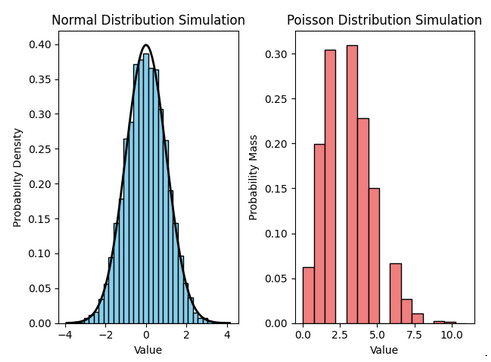

Statistical distributions describe the way values are distributed in a dataset. They are essential in probability theory and statistics, aiding in understanding randomness, variability, and likelihood of different outcomes.
Discrete distributions
Discrete distributions, represented by Probability Mass Functions (PMFs), characterize outcomes with distinct values. Examples like the Binomial and Poisson distributions model specific events with defined probabilities. They're vital in analyzing countable occurrences and are widely used across statistics, finance, and biology
Continuous distribution
Continuous distributions, defined by smooth Probability Density Functions (PDFs), encompass a range of values without gaps. Examples like the Normal and Exponential distributions model various phenomena with continuous outcomes. They're essential in analyzing continuous data in fields like physics, economics, and engineering.
Some common distributions include:
Mathematically, these distributions can be represented using probability density functions (PDFs) or probability mass functions (PMFs) depending on whether the distribution is continuous or discrete, respectively.
Here are some examples of mathematical representations:
Normal Distribution PDF:
\[
f(x | \mu, \sigma^2) = \frac{1}{\sqrt{2\pi\sigma^2}}e^{-\frac{(x - \mu)^2}{2\sigma^2}}
\]
Binomial Distribution PMF:
\[
P(X = k) = \binom{n}{k}p^k(1-p)^{n-k}
\]
Poisson Distribution PMF:
\[
P(X = k) = \frac{\lambda^k e^{-\lambda}}{k!}
\]
Let's create simulations for both a continuous distribution (Normal Distribution) and a discrete distribution (Poisson Distribution). For the Normal Distribution simulation, random data is generated from a standard normal distribution while for the Poisson Distribution simulation, random data is generated from a Poisson distribution with an average rate of events:
import numpy as np
import matplotlib.pyplot as plt
# Simulating and plotting the Normal Distribution
mean = 0
std_dev = 1
samples_normal = np.random.normal(mean, std_dev, 10000)
plt.figure(figsize=(8, 5))
plt.hist(samples_normal, bins=50, density=True, alpha=0.7, color='blue')
plt.title('Normal Distribution')
plt.xlabel('Value')
plt.ylabel('Density')
plt.grid(True)
plt.show()
# Simulating and plotting the Binomial Distribution
n_trials = 20
prob_success = 0.5
samples_binomial = np.random.binomial(n_trials, prob_success, 10000)
plt.figure(figsize=(8, 5))
plt.hist(samples_binomial, bins=20, density=True, alpha=0.7, color='green')
plt.title('Binomial Distribution')
plt.xlabel('Number of Successes')
plt.ylabel('Density')
plt.grid(True)
plt.show()
# Simulating and plotting the Poisson Distribution
lambda_param = 5
samples_poisson = np.random.poisson(lambda_param, 10000)
plt.figure(figsize=(8, 5))
plt.hist(samples_poisson, bins=20, density=True, alpha=0.7, color='red')
plt.title('Poisson Distribution')
plt.xlabel('Number of Events')
plt.ylabel('Density')
plt.grid(True)
plt.show()

source: wikipedia wasyresearch